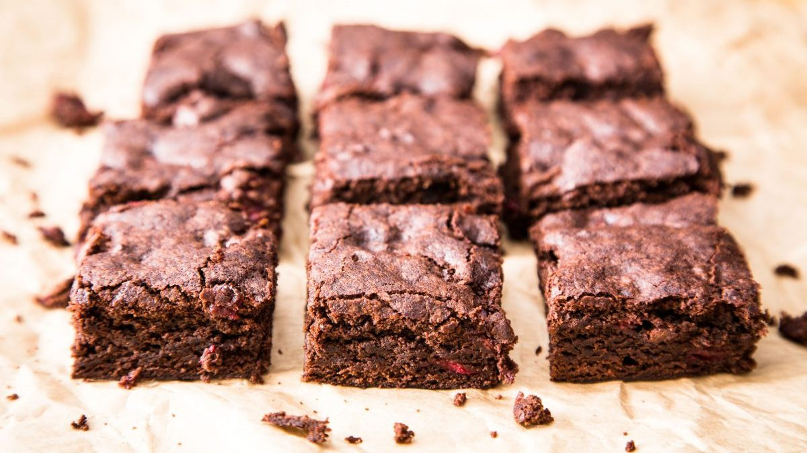

Brownies

Ingredientes:
- 280 gramos de manteca
- 200 gramos de azucar
- 150 gramos de azucar rubia
- 3 huevos
- 110 gramos de chocolate
- 260 gramos de harina 0000
- 30 gramos de cacao en polvo
- 1 pizca de sal
- 1 cucharadita de escencia de vainilla
Pasos a seguir:
- Poner en una hornalla agua para baño maria, en un bowl agregar chocolate y manteca hasta que se una
- Batir los huevos con el azucar y la escencia de vainilla
- Agregar el chocolate a la mezcla de huevos y batir
- Tamizar todos los secos e integrar con espatula a los liquidos
- Agregar en un molde de 20cm enmantecado
- Poner la preparacion en un horno precalentado a 180°C por 30 minutos
- Dejar que se enfrie, y disfrutar con unos matecitos!